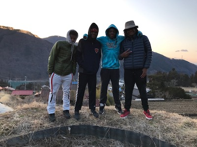
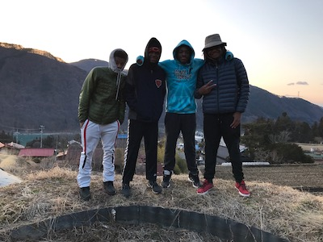

Infutor
In the summer of 2019, I interned at a small consumer data company in Chicago called Infutor Data Solutions where I worked as a technology oporations intnern. During my time at Infutor I successfully developed custom UIs in Salesforce to increase efficiency of the sales development representatives (SDRs). I also implemented workflow-rules to automate the sales development interface to reduce high frequency processes by 80%. I wrote documentation of the API for engineers and product managers and towards the end of my internship, I repared a formal presentation for senior leadership, demonstrating all efficiency improvements.

 
